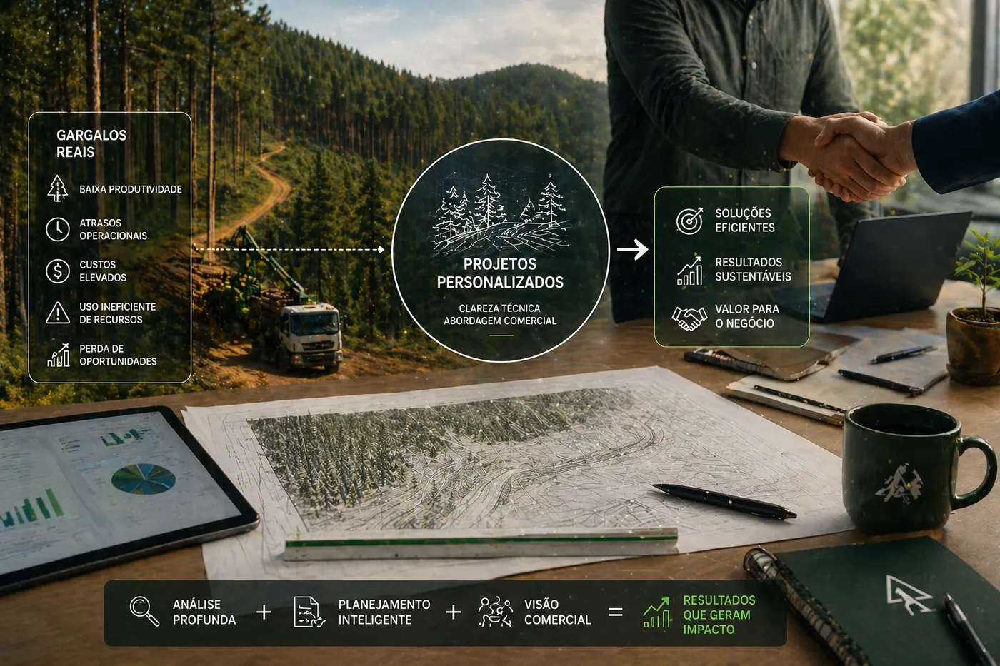

Contagem de mudas com IA
Detecção automática em ortomosaicos para auditoria, qualidade de plantio e leitura de produtividade.
A Avant estrutura soluções modulares e recorrentes para empresas que precisam unir inteligência artificial florestal, planejamento, geotecnologia e automação aplicada ao agroflorestal.

Cada card abaixo pode funcionar como uma porta de entrada comercial para reuniões, propostas ou campanhas de aquisição de clientes.
Detecção automática em ortomosaicos para auditoria, qualidade de plantio e leitura de produtividade.
Identificação de lacunas e inconsistências espaciais com apoio de visão computacional.
Mapas georreferenciados detalhados, classes de relevo, zonas operacionais e apoio à execução.
Satélites, drones, índices espectrais e leitura multitemporal para grandes áreas.
Mapeamento técnico de limites, talhões, estradas, hidrografia e áreas de interesse.
Material cartográfico para plantio, colheita, monitoramento, logística e gestão.
Projetos geoespaciais com séries históricas, processamento em escala e produtos cartográficos analíticos.
Apoio técnico para leitura espacial, conformidade e atualização de bases territoriais.
Suporte documental e territorial para regularidade cadastral de imóveis rurais.
Organização territorial e apoio técnico para informação fundiária relacionada ao imóvel.
Leitura integrada entre mapa, documentação e uso do solo para mais segurança decisória.
Análises ambientais, operacionais e territoriais para suporte a projetos, relatórios e auditorias.
Planejamento de uso, conservação, intervenção e organização produtiva da paisagem.
Plataformas de consulta com filtros, indicadores e camadas para times técnicos e executivos.
A estrutura abaixo amplia os textos do site atual da Avant para deixar mais claro o nível técnico das entregas e a aderência delas ao setor florestal.
Uso de drones e satélites de alta resolução para ortomosaicos, MDS, MDT, índices espectrais, monitoramento de plantio, regeneração, colheita e degradação.
Delimitação de áreas operacionais, estradas, acessos, classes de relevo, zonas por tipo de máquina e leitura de risco para maior segurança e eficiência.
Estudos de relevo, uso e ocupação do solo, impactos ambientais, desastres naturais e análises de viabilidade com base em dados geoespaciais atualizados.